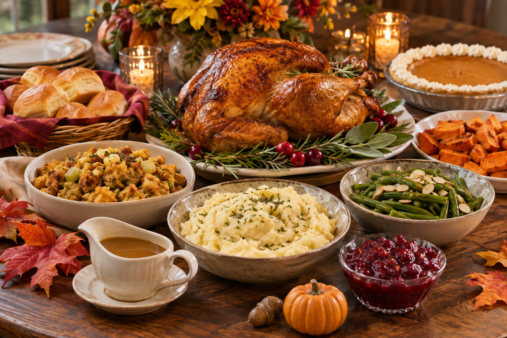
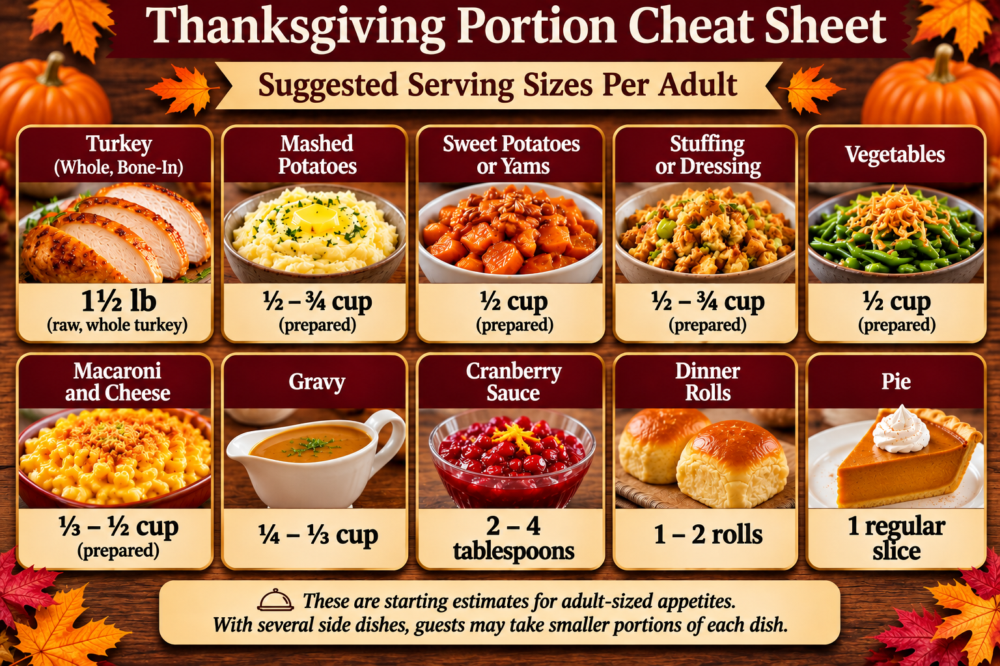
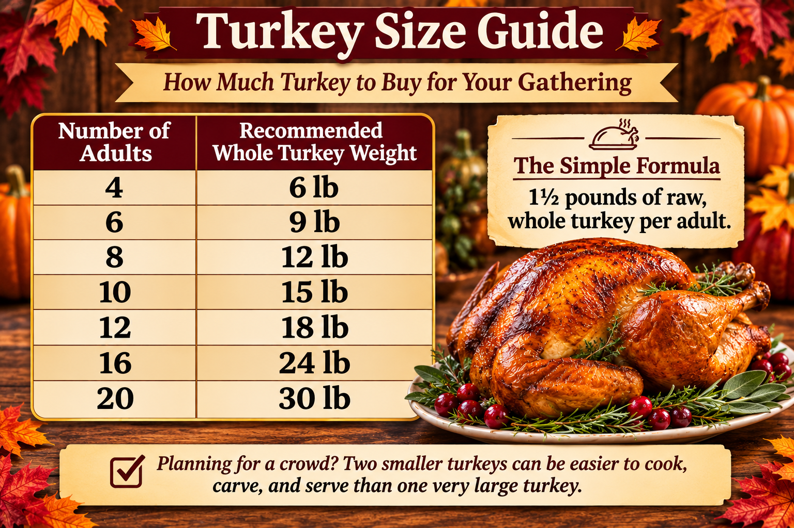
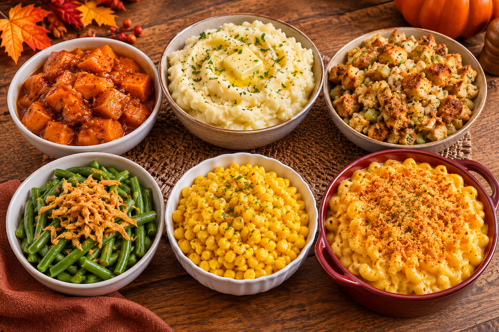
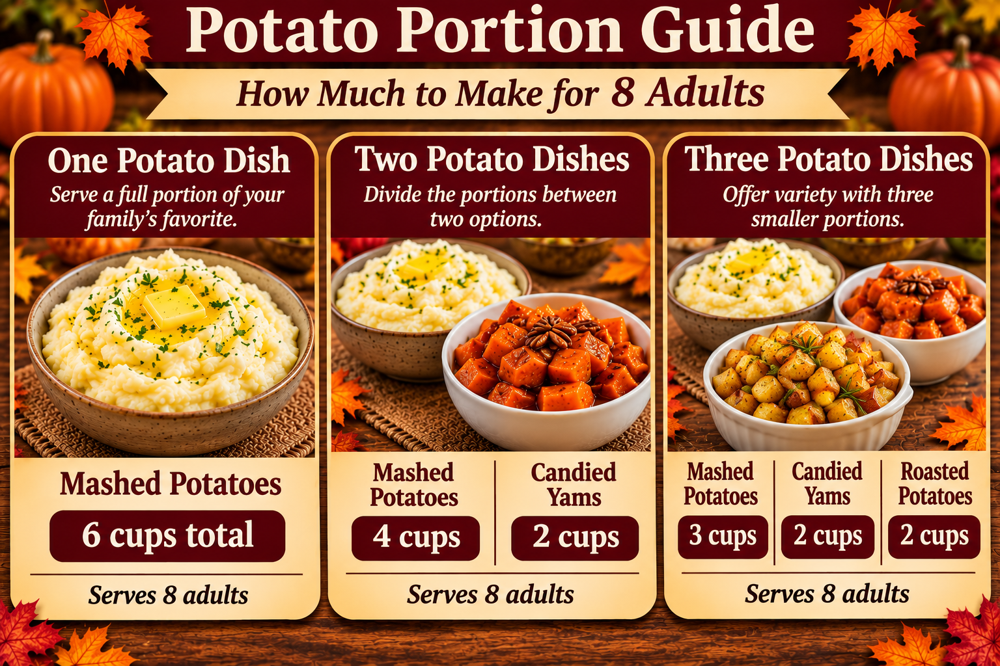
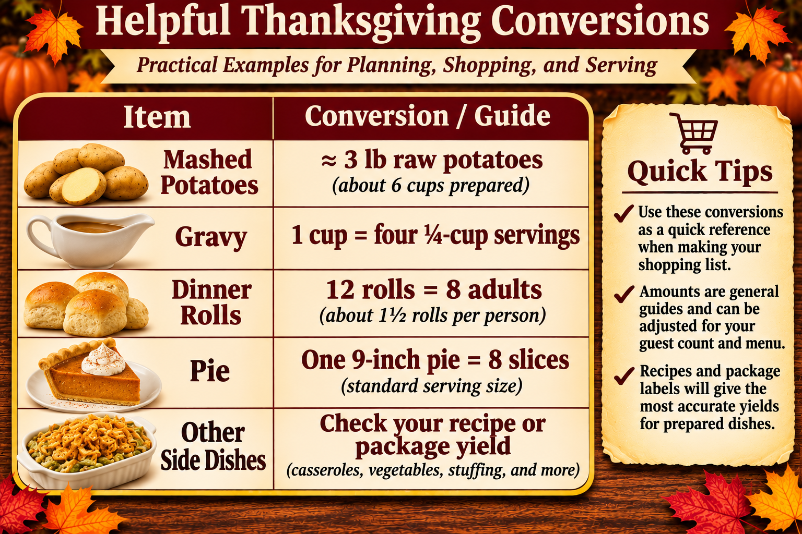
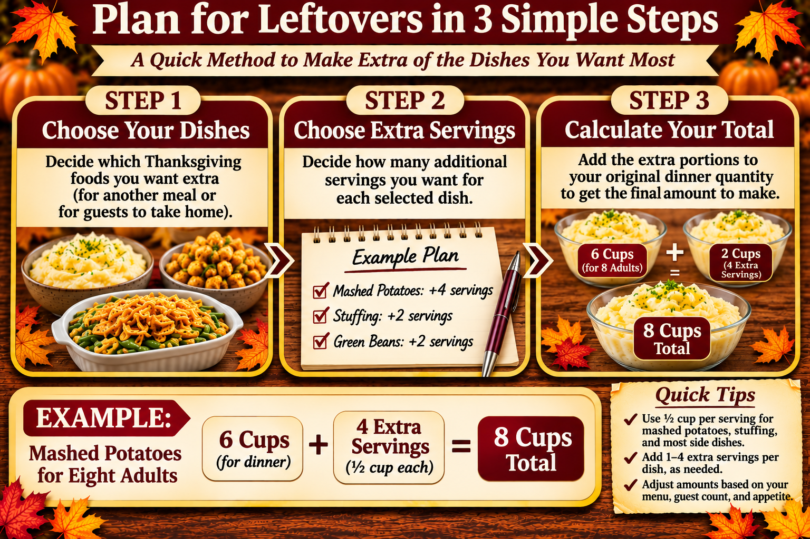
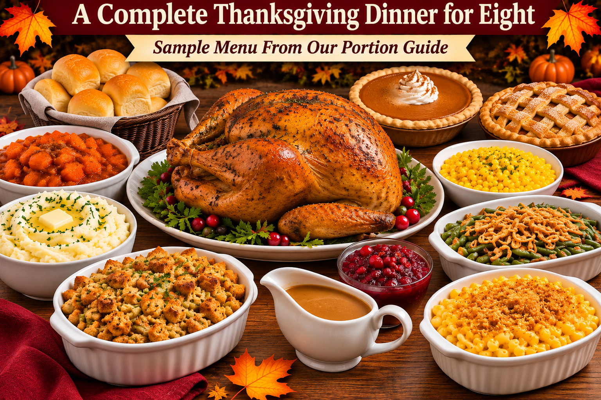
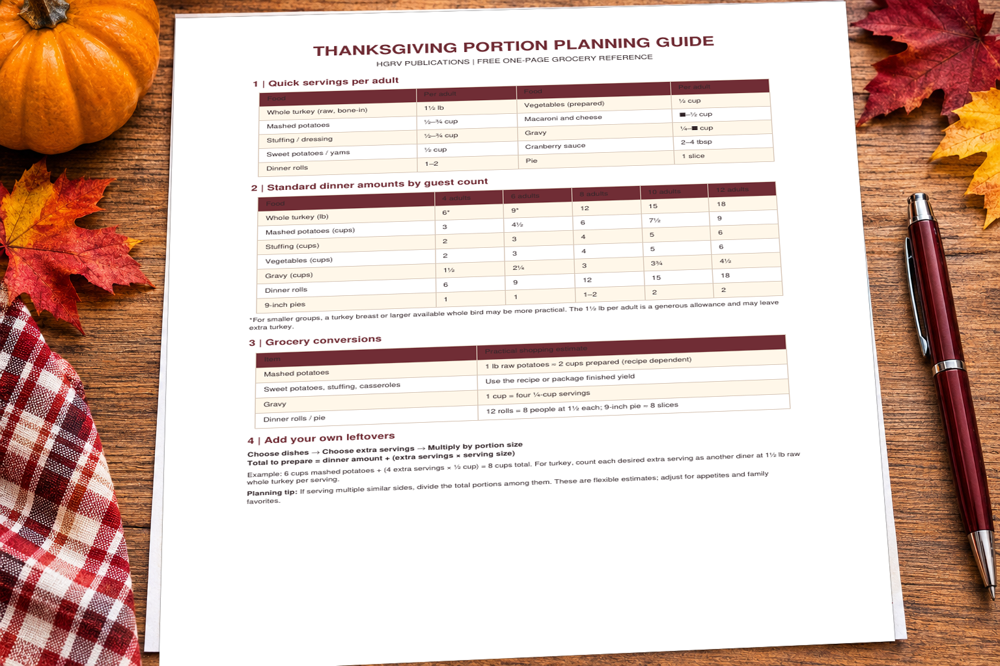

How Much Food Do You Really Need for Thanksgiving?
A Complete Portion Guide for Turkey, Side Dishes, Desserts & Leftovers

Thanksgiving dinner is one of those meals where everyone wants to make sure there's enough food. But how big should the turkey be? How many pounds of potatoes do you need for eight people? And what happens when you're serving several filling side dishes together?
The key is to start with your guest count, use reasonable serving estimates, and adjust for the variety of foods you're offering. This guide helps you calculate dinner quantities, turn them into grocery purchases, and choose your own amount of extra food for leftovers.
1. How Much Thanksgiving Food Should You Plan Per Person?
Most guests won't eat a full portion of every dish on the table. A person who takes extra mashed potatoes might only want a spoonful of candied yams. Use these as flexible adult-sized planning estimates, not rigid limits.
| Food | Suggested amount per adult |
|---|---|
| Whole turkey, bone-in | 1½ lb raw (generous allowance) |
| Mashed potatoes | ½–¾ cup prepared |
| Sweet potatoes or yams | ½ cup prepared |
| Stuffing or dressing | ½–¾ cup prepared |
| Vegetables | ½ cup prepared |
| Macaroni and cheese | ⅓–½ cup prepared |
| Gravy | ¼–⅓ cup |
| Cranberry sauce | 2–4 tablespoons |
| Dinner rolls | 1–2 |
| Pie | 1 regular slice |

What about children?
For rough side-dish planning, count teenagers as one adult serving, ages 6–12 as roughly ½–¾, and ages 3–5 as roughly ⅓–½. Toddlers need individually planned small portions. Appetites vary, so round up if uncertain.
2. How Big of a Turkey Do You Need?
Plan approximately 1½ pounds of raw whole, bone-in turkey per adult as a generous shopping allowance, consistent with our first Thanksgiving article. This includes bones, skin, and cooking loss, not 1½ pounds of carved meat. Some families will have leftovers even without planning extra servings.
| Adults | Whole turkey to buy |
|---|---|
| 4 | 6 lb* |
| 6 | 9 lb* |
| 8 | 12 lb |
| 10 | 15 lb |
| 12 | 18 lb |
| 16 | 24 lb |
| 20 | 30 lb |
*Smaller calculated weights may not be sold as whole turkeys. A turkey breast or a larger available bird may be more practical. For a large gathering, two smaller birds may be easier to manage than one enormous turkey.
Serving ham too?
If turkey and ham are both main dishes, you can reduce the turkey allowance because guests will share their main-course portions between both meats. Plan ham separately, considering whether it is bone-in or boneless. Increase turkey if it is the family favorite.

3. How Much of Each Side Dish Should You Make?
Side dishes are easier to plan in groups. Serving more choices does not mean each guest needs a full serving of every choice.
Potatoes and yams
Mashed potatoes, roasted potatoes, candied yams, and sweet potato casserole overlap. For one potato dish, allow around ½–¾ cup per adult. With several, divide the overall allowance according to favorites.
Stuffing and bread
For a traditional menu, allow about ½–¾ cup stuffing per adult and one or two rolls. Reduce individual quantities when offering several types of stuffing, biscuits, or other breads.
Vegetables
For one vegetable dish, start with ½ cup prepared per adult. With two vegetables, around ¼–⅓ cup of each per adult may be enough, depending on your guests.
Rich and hearty sides
Macaroni and cheese and creamy casseroles are filling. When several other sides are available, ⅓–½ cup macaroni and cheese per adult is a useful starting point. Count cheesy potatoes with the potato group rather than as an entirely separate allowance.
Sauces and condiments
Allow around ¼–⅓ cup gravy per adult, using the upper end when guests put it on several foods. For cranberry sauce served as a condiment, plan 2–4 tablespoons per adult.

4. Serving Similar Dishes? Adjust the Portions
For eight adults, consider three ways to plan potato dishes:
| Menu | Example prepared quantities |
|---|---|
| Mashed potatoes only | 6 cups mashed |
| Mashed potatoes + candied yams | 4 cups mashed + 2 cups yams |
| Mashed + yams + roasted potatoes | 3 cups mashed + 2 cups yams + 2 cups roasted |
The total grows only slightly when a third option is added. These examples are flexible: make more of the dishes your family actually enjoys, not equal amounts of everything.

5. Turning Portions Into Grocery Quantities
A recipe may call for pounds of raw ingredients even though your serving plan is in cups of finished food. For mashed potatoes, a convenient rough estimate is 1 pound of raw potatoes for about 2 cups of prepared mash. Actual yield changes with peeling, potato type, and added ingredients; the recipe yield takes priority.
| Raw potatoes | Approximate mashed yield |
|---|---|
| 1 lb | 2 cups |
| 2 lb | 4 cups |
| 3 lb | 6 cups |
| 4 lb | 8 cups |
| 5 lb | 10 cups |
For sweet potato casseroles, stuffing, macaroni and cheese, and vegetables, check the finished yield in the specific recipe or package. One cup of gravy gives four ¼-cup portions; a 12-count roll package gives eight guests 1½ rolls each; and a standard 9-inch pie commonly yields eight slices.

6. Thanksgiving Quantities by Guest Count
This chart assumes turkey, mashed potatoes as the only potato dish, one stuffing, one vegetable, gravy, rolls, and pie. It covers the dinner itself, without automatically adding leftovers.
| Food | 4 adults | 6 adults | 8 adults | 10 adults | 12 adults |
|---|---|---|---|---|---|
| Turkey (lb) | 6* | 9* | 12 | 15 | 18 |
| Mashed potatoes (cups) | 3 | 4½ | 6 | 7½ | 9 |
| Stuffing (cups) | 2 | 3 | 4 | 5 | 6 |
| Vegetables (cups) | 2 | 3 | 4 | 5 | 6 |
| Gravy (cups) | 1½ | 2¼ | 3 | 3¾ | 4½ |
| Rolls | 6 | 9 | 12 | 15 | 18 |
| 9-inch pies | 1 | 1 | 1–2 | 2 | 2 |
*Small calculated turkey weights may require a turkey breast or larger available whole bird. Adjust individual side dishes downward when serving several similar choices.
7. How Much Extra Food Should You Make for Leftovers?
Some families want just a little extra turkey; others want several more meals. Rather than prescribing a leftover amount, choose the dishes you want extra of and calculate your own servings.
Three-step leftovers method
1. Choose the dishes you want extra. You do not need leftovers of everything.
2. Decide how many additional servings you want for each dish.
3. Multiply the extra servings by the portion size and add the result to your dinner quantity.
Example: Eight adults need about 6 cups of mashed potatoes for dinner. Four additional ½-cup portions add 2 cups, for 8 cups total. At the approximate conversion above, that means around 4 pounds of raw potatoes.
For whole turkey, count each desired additional turkey serving as another adult when estimating purchase weight. For example, eight adults at dinner plus four additional turkey servings means planning for twelve servings: 12 × 1½ lb = approximately 18 lb of raw whole turkey. This is a generous shopping allowance; actual carved meat yield varies.

8. Example: Thanksgiving Dinner for Eight
Suppose eight adults will have turkey, mashed potatoes, candied yams, stuffing, green beans, corn, macaroni and cheese, gravy, cranberry sauce, rolls, and two kinds of pie. A practical starting menu is:
| Dish | Suggested amount |
|---|---|
| Whole turkey | 12 lb |
| Mashed potatoes | 4 cups |
| Candied yams | 2 cups |
| Stuffing | 4 cups |
| Green beans | 2 cups |
| Corn | 2 cups |
| Macaroni and cheese | 3 cups |
| Gravy | 3 cups |
| Cranberry sauce | 1½ cups |
| Dinner rolls | 12 |
| Pies | 2 |
This example divides the potato and vegetable allowances across several choices. For shopping, four cups of mashed potatoes suggests roughly two pounds of raw potatoes. Use each other recipe’s finished yield to determine its ingredient quantities. Adjust for what your guests prefer.

9. How Much Dessert Should You Make?
A standard nine-inch pie typically yields eight regular slices. Start with one slice per guest. When offering several flavors, cut smaller slices so people can sample more than one. Add extra slices only if you want dessert leftovers.
10. Remember Appetizers and Snacks
Guests who snack before dinner may eat less at the main meal. For light appetizers shortly before dinner, about 3–4 small pieces per adult is a starting point. If guests arrive hours early, plan more according to the size and variety of the snacks.
11. Five Common Planning Mistakes
• Counting young children as full adult servings.
• Making full servings of every side, even when dishes overlap.
• Forgetting that appetizers affect dinner appetites.
• Making extra of everything instead of selecting favorite leftovers.
• Failing to count dishes that guests are bringing.
12. Free Printable Thanksgiving Portion Planning Guide
Our free one-page Thanksgiving Portion Planning Guide gathers the key references in one place: serving sizes per person, dinner quantities for 4, 6, 8, 10, and 12 adults, grocery conversions, and a simple formula for planning extra servings. Print it before shopping or keep it handy while planning your menu.

Frequently Asked Questions
How much turkey do I need for eight people?
Approximately 12 pounds of raw whole, bone-in turkey using the generous 1½-pound-per-adult allowance. Add extra servings if you want additional turkey for later.
How many pounds of potatoes for ten people?
About four pounds raw for roughly 7½ cups of mashed potatoes, if mash is the primary potato dish. Recipe yield varies.
How many side dishes should I serve?
Three to five can offer plenty of variety, but choose based on your guests and avoid duplicating similar dishes unnecessarily.
How much gravy should I make?
Start with ¼–⅓ cup per adult. For eight adults, around 3 cups is a generous allowance.
Should I reduce portions if I serve several sides?
Often, yes. Plan the overall amount, then divide it among dishes with similar roles.
How do I calculate extra food for leftovers?
Multiply the number of extra servings by each dish’s portion size, then add it to the dinner quantity.
Final Thoughts
Start with the guest count, choose the menu, and calculate portions for the dishes you're actually serving. Similar sides can share an allowance, and leftovers can be planned according to what your family will enjoy. A well-planned Thanksgiving dinner isn't about making the most food. It's about making enough of the food everyone loves.